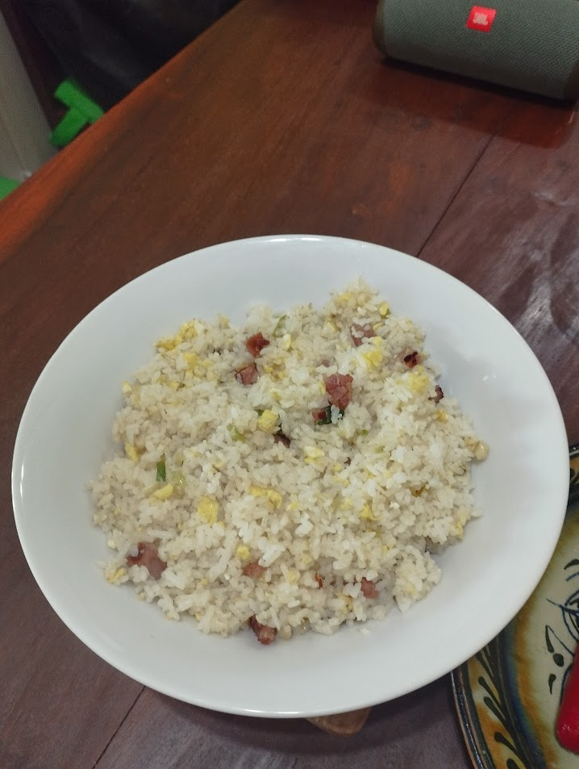

Egg Fried Rice
A quick and satisfying dish made with day old rice, scrambled eggs, and a mix of vegetables. It's seasoned with soy sauce and a hint of garlic for a savory, umami-rich falvor that makes it a favorite comfort food.
Discover a collection of delicious recipes that are easy to follow and guaranteed to impress. Whether you're a seasoned chef or just starting in the kitchen, we've got something for everyone.
A quick and satisfying dish made with day old rice, scrambled eggs, and a mix of vegetables. It's seasoned with soy sauce and a hint of garlic for a savory, umami-rich falvor that makes it a favorite comfort food.
A hearty and nutritious Filipino stew featuring tender pork, mung beans, and leafy greens topped with crunchy pork chicharron. Slow-cooked to perfection, this dish combines savory and earthy flavors.
A delicious Filipino-Style pork steak, marinated in a tangy blend of soysauce, calamansi juice, and garlic. Pan-fried until golden brown, it's served with caramelized onions for a flavorful and juicy main course.